Hindernismateriaal zelf maken.
1. Inleiding
2. Staanders zelf maken
3. Lepels zelf maken
4. Cavaletti zelf maken
5. Onderbouwing zelf maken
2. Staanders zelf maken
3. Lepels zelf maken
4. Cavaletti zelf maken
5. Onderbouwing zelf maken
| Inleiding | ||
|
Er zijn vele manieren om hindernissen te maken of ze samen te stellen van ander materiaal. Het moet echter wel veilig zijn: • de balk moet makkelijk kunnen vallen • de balk mag, in geval van breuk, geen scherpe randen of splinters vormen • de staanders mogen geen scherpe randen hebben Gebruik dus geen pvc-buizen want als deze breken hebben ze hele scherpe punten. Met takken en bomen moet je voorzichtig zijn met scherpe resten van takjes. Alternatieve staanders: • emmers (evt. gevuld met zand) • voertonnen • autobanden • bierkratjes • stenen (cavaletti) Alternatieve balken Er is geen goed alternatief voor springbalken. Die zul je dus moeten kopen. Wil en kun je erg smalle hindernissen springen, kun je in overweging nemen om lange weidepalen te gebruiken. |
||

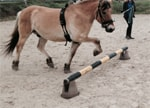
Plantenbakken voor een balkon (de ronde met een uitsparing) zijn bijzonder goed te gebruiken als cavaletti.
Tip van: Annette Dijkstra |
||
| Staander 1 |

|


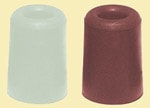
|
|
Mogelijkheden Alleen geschikt voor lage hindernissen. Je kunt een stijlsprongetje of een oxer maken met deze staanders. Maak en spring er geen hoge hindernis mee, want als het paard de balken zwaar raakt valt de hele hindernis om. Tenzij je veiligheidslepels gebruikt zoals hier verder aangegeven. De achterste balk kan natuurlijk wel gemakkelijk van zijn steun afrollen. De staander is wel zeer goed hanteerbaar en opgevouwen makkelijk op te ruimen. Bevestig de borgpennen altijd in de staander als je hem opruimt. Materiaal 2 planken scharnier twee balkjes 6 x 6 x 50 cm borgpennen hoekijzers voor de lepels schroeven verf Gereedschap zaag boormachine schroevendraaiers verfrollers + verfbakje + verf |
|
Instructie • Boor de gaten in de planken voor de "lepels". • Maak de twee planken met het scharnier aan elkaar. Zorg dat het scharnier aan de binnenkant zit. • Schroef, of spijker, de balkjes onder aan de planken voor de stabiliteit. • Geef het geheel een leuk gekleurd verflaagje. • Maak het gat in het hoekijzer groot genoeg voor de borgpen. • Kort de poot van het hoekijzer waarop de balk moet dragen, in tot ongeveer 6 cm. zodat de balk er makkelijk af kan rollen. Vijl de hoeken rond. Alternatieven • Je kunt de hoekijzers ook ophangen aan een haakje. • In plaats van de hoekijzers kun je balkjes van ongeveer 7 cm. gebruiken met een gat in het midden. Je hebt dan wel een langere borgpen nodig. • In plaats van de hoekijzers kun je een sleutelgatprofiel aanbrengen met een veiligheidslepel erin, indien de lepel voldoende lengte heeft om de balk dwars op te laten liggen. Dit maakt de staander echter duur. • In plaats van lepels kun je een profiel van een boekenplank aanbrengen met een boekensteun. Let wel op dat deze niet scherp is en niet al te lang. • In plaats van de hoekijzers kun je ook "deurstoppers" van rubber gebruiken en met een borgpen vastzetten. Let wel op of de borpen lang genoeg is en in de deurstopper past. |
| Staander 2 |

Materiaal balk van 160 x 8 x 8 cm. 4 planken 40 x 15 x 2,5 cm. spijkers schroeven houtlijm Gereedschap zaag boormachine hamer schroevendraaiers verfrollers + verfbakje + verf |
|
Mogelijkheden Deze staander is natuurlijk veel zwaarder dan de eerste. Hiermee kunnen wel hoge hindernissen gebouwd worden. De lepels kunnen aan twee kanten in een hoek van 90° opgehangen worden zodat er twee hindernissen met één paal gebouwd kunnen worden. Indien je originele lepels wilt gebruiken, moet de staander 6 x 6 cm. zijn. Instructie • Boor de gaten op de gewenste afstand in de balk. Hanteer daarbij wel een standaard tussenruimte. • Zaag de planken op maat. • Verwijder een hoek van 45°. • Vijl de scherpe kanten weg. • Bevestig de planken met schroeven aan de balk. • Breng eventueel een hoek-ijzer in de hoeken van de planken om te voorkomen dat de planken hun hoek van 90° gaan verliezen. • Geef het geheel een mooi kleurtje of verf het wit. |
| Staander 3 |
 Materiaal 1 balkje van 160 x 8 x 8 cm. 4 plankjes 50 x 10 x 5 cm. 4 hoekijzers schroeven houtlijm verf Gereedschap zaag boormachine beitel schaaf schroevendraaiers verfrollers + verfbakje + verf |
  Mogelijkheden Deze staander zal ongetwijfeld wat zwaar worden. Vanwege het grotere oppervlak waar deze hindernis op moet staan, heeft hij problemen met het stabiel staan op ongelijke bodem.Je kunt daarvoor op de vier hoekpunten een plankje onder de voet timmeren, maar dan wordt hij nog zwaarder. Je kunt de staander gebruiken voor twee hindernissen. Indien je originele lepels wilt gebruiken, moet de staander 6 x 6 cm. zijn. Instructie • Boor de gaten in het balkje aan twee kanten op een afstand van 10cm.. • Zaag de planken op maat. • Zoek het midden van de planken en zet 5 cm van het midden met de winkelhaak een haakse lijn. • Leg het bijbehorende plankje tegen het lijntje en teken de ander zijde af. • Zet aan de zijkant twee haakse lijnen tot 2.5 cm. diep. Trek een lijn in de lengte zodat je de diepte van 2.5 cm. hebt aangegeven. • Zaag met de kapzaag tot een diepte van 2.5 cm. • Steek met de beitel het hout eruit. • Doe hetzelfde met het bijbehorend plankje. • Maak met de schaaf de hoeken rond van het hele plankje zodat er geen scherpe kanten meer aanzitten. Werk eventeueel bij met de vijl. • Lijm het kruis in elkaar. • Schroef een aantal schroeven om het kruis te verstevigen. Eerst voorboren. Zorg dat ze niet op de plaats van de houtschroef zitten die later de paal aan het kruis bevestigd. • Zet een grote houtschroef onder in het kruis om de balk op zijn voet te bevestigen. Eerst voorboren • Breng de hoekijzers aan. • Geef het geheel een leuk gekleurd verflaagje. |
| Staander 4 |
|
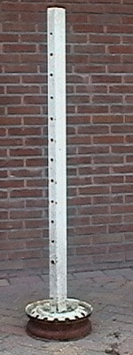
Materiaal ronde of vierkant buis van 1.60 m. lengte. oude velg verf Gereedschap lasapparaat verfrollers + verfbakje + verf |
 Mogelijkheden De staander kan ook met een band eraan gemaakt worden. Met een band is hij eigenlijk te zwaar en zonder band is hij eigenlijk te licht. Als je in de staander aan twee kanten (in de aanliggende kanten) gaten boort, kun je twee hindernissen tegelijk van een staander voorzien. Instructie • Boor gaten in de buis op een afstand van 5 of 10 cm. • Las de buis aan de velg, zorg dat hij recht staat. • Geef het geheel een leuk gekleurd verflaagje. |
| Springoefeningen in zakformaat |

|
|
Wil je verschillende springoefeningen en enkele parcoursschetsen in een handig boekje? Een leuk geschenk voor jezelf, je vriend(in) of familielid. Lees meer ............ |
| Lepel 1 |
|
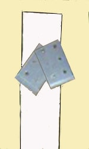
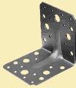
Materiaal 2 hoekijzers met een voldoende groot gat in het midden bovenaan één van de zijden. borgpen, lange bout of haakjes(geen spijker!) Je kunt de hoekijzers ophangen met een borgpen, maar je kunt ze ook ophangen aan haakjes. |
| Lepel 2 |
|
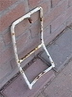
Materiaal buigzaam Ijzer Gereedschap lasapparaat bankschroef om te buigen |
| Lepel 3 |

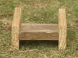
Materiaal 3 houten plankjes houtlijm spijkers bout of lange schroef Gereedschap boormachine zaag hamer |
| Cavaletto 1 | |

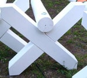
Materiaal 4 balkjes van 707 x 10 x 8 Rond balkje met een lengte van 2.50/3.00 m. (b.v. een lange weidepaal). Neem niet een te dikke paal want de paal moet kunnen breken bij een belasting van 550 kg. schroeven 5x70 houtlijm Houtschroef 200mm lang met ring verf Gereedschap zaag boormachine met houtboren schaaf beitel winkelhaak schroevendraaier ringsleutel verfr |
|
|
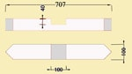
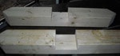
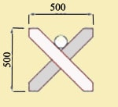


Mogelijkheden De cavaletti kunnen op drie hoogtes gebruikt worden. De cavaletti kunnen op elkaar gestapeld worden tot een hindernis. Het kruis heeft een maat van 50 x 50 cm. Instructie • Aan de kopse kanten van de balkjes zaag je in een hoek van 45° de hoeken weg. • Zoek het midden van de balkjes en zet 5 cm van het midden met de winkelhaak een haakse lijn. • Leg het bijbehorende balkje tegen het lijntje en teken de ander zijde af. • Zet aan de zijkant twee haakse lijnen tot 4 cm. diep. Trek een lijn in de lengte zodat je de diepte van 4 cm. hebt aangegeven. • Zaag met de kapzaag tot een diepte van 4 cm. • Steek met de beitel het hout eruit. • Doe hetzelfde met het bijbehorend balkje. • Maak met de schaaf de hoeken rond van het hele balkje zodat er geen scherpe kanten meer aanzitten. Werk eventeueel bij met de vijl. • Lijm het kruis in elkaar. • Schroef een aantal schroeven om het kruis te verstevigen. Eerst voorboren. Zorg dat ze niet op de plaats van de houtschroef zitten die later de paal aan het kruis bevestigd. • Zet de kruizen op een rechte ondergrond. • Leg de paal erop en laat hem 2 cm oversteken. • Zorg dat je kruis recht staat en schroef de paal op het kruis. Eerst voorboren. • Geef het geheel een verflaag. |
|
| Cavaletto 2 | |
|
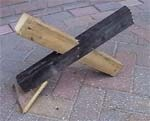
 
Mogelijkheden Je maakt twee losse kruisjes, die zelfstandig kunnen staan waarop je los een hindernispaal legt. Het kruisje biedt twee hoogtes afhankelijk van de gebrukte maten. Ze kunnen niet tot een hindernis gestapeld worden. Materiaal 4 balkjes van 50 x 10 x 8 driehoekig plankje met één zijde van 18 cm. houtlijm bout, moer en 2 ringen verf Gereedschap zaag boormachine met houtboren schaaf beitel winkelhaak ringsleutel verfrollers + verfbakje + verf |
|
|
Instructie • Zoek het midden van de balkjes en markeer dat met een potlood. • Boor een gat, groter dan de spijker, door de balkjes. • Verbind ze door middel van een grote spijker met elkaar. • Verdraai de balkjes ten opzichte van elkaar tot de gewenste hoogtes. • Zet een potloodstreep naast beide balkjes op het andere balkje. • Neem de balkjes uit elkaar. • Zet aan de zijkant twee haakse lijnen tot 4 cm. diep, bij de afgetende lijnen. Trek een lijn in de lengte zodat je de diepte van 4 cm. hebt aangegeven. • Zaag met de kapzaag tot een diepte van 4 cm. • Steek met de beitel het hout eruit. • Doe hetzelfde met het bijbehorend balkje. • Maak met de schaaf de hoeken rond van het hele balkje zodat er geen scherpe kanten meer aanzitten. Werk eventeueel bij met de vijl. • Lijm het kruis in elkaar. • Boor het middelste gat groter en doe er een bout doorheen met een ring. • Doe een ring en een moer aan de bout en zet het vast. Het eventueel uistekende deel van de bout afzagen en glad vijlen. • Maak een driehoekje van een plankje van met een onderzijde van 18 cm. • Zet de kruizen op een rechte ondergrond op zijn hoogste stand. • Timmer het driehoekje aan een balkje, zodanig dat het de grond raakt. • Geef het geheel een verflaag. |
|
| Onderbouwen | ||


• pylonnen • bloembakjes • doorgezaagde palets in vier stukken (scherpe kanten rond vijlen) • voertonnen • deken of lap over onderste balk hangen, Leg eventueel de grondbalk erop tegen het opwaaien. • strobalen • een zijltje kun je gebruiken als sloot. Leg aan beide zijden een grondbalk op het zijl tegen het opwaaien en voor een duidelijk markering. |
||
| Advertentie |